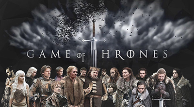

“La televisión no está preparada”, Emilia Clarke sobre el final de Game of Thrones
En una conferencia en Israel, Francesca Orsi, vicepresidente de series dramáticas de HBO, se refirió a las reacciones que produjo el guion final en el reparto y equipo. Los actores de la serie también sumaron las suyas.
Game of Thrones vuelve hasta 2019
HBO confirmó que la serie de televisión más exitosa de los últimos años regresará hasta el próximo año. La octava y última temporada tendrá seis capítulos que ya están en etapa de producción.
Por qué siempre es invierno en Invernalia, el reino ficticio de "Game of Thrones"
Cualquiera que siga la serie Game of Thrones ("Juego de tronos") sabe que el clima en este mundo de fantasía es un verdadero caos.
HBO anunció cinco posibles ‘spin-offs’ de Juego de Tronos para el 2018
Estrenos como ‘Here, Now’; ‘Succession’; ‘Barry’ y ‘Sharp Objects’ son algunos de las apuestas de este canal para el próximo año
